탐정학원 V2
기존 화면과 새 화면 비교
메인 홈, 암호 해독, 정답 결과 세 화면을 먼저 다시 만들었습니다. 문제·정답·보상 로직은 그대로이고, 화면 구성과 그림, 조작, 장면 전환을 바꿨습니다. 방향이 맞는지 확인받은 뒤 나머지 화면으로 넓힙니다.
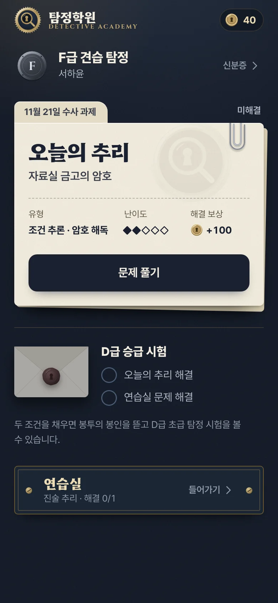
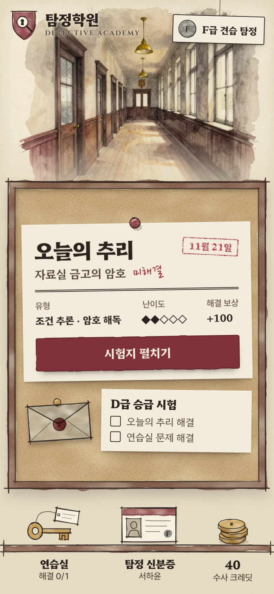
메인 홈: 대시보드에서 학원 복도로
- 맨 위에 복도 그림이 있어 어디에 서 있는지 먼저 보입니다.
- 오늘의 추리는 게시판에 압정으로 꽂힌 시험 공고입니다. 공고 전체가 눌리고, 가장 진한 와인색 단추는 다음 행동 하나뿐입니다.
- 승급 시험은 봉랍된 봉투와 조건 꼬리표로 같은 게시판에 붙였습니다. 조건을 채우면 빨간 펜 체크가 생깁니다.
- 연습실, 탐정 신분증, 수사 크레딧은 선반 위의 열쇠, 신분증, 주화입니다.
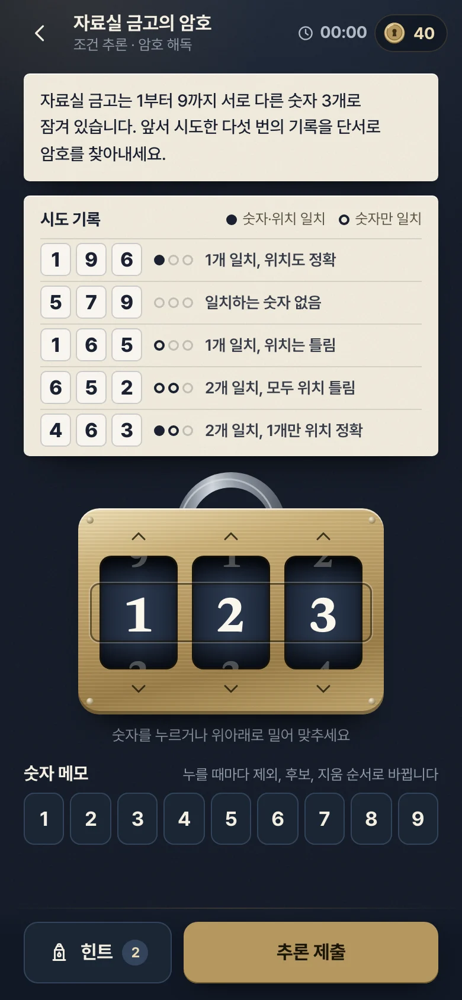
암호 해독: 패널 묶음에서 책상 위 시험지와 자물쇠로
- 복도에서 떼어 온 공고가 책상 위 시험지가 됩니다. 문제, 시도 기록, 숫자 메모가 한 장에 있습니다.
- 숫자 메모는 종이에 직접 적습니다. 제외는 연필 가위표, 후보는 빨간 동그라미이고 시도 기록의 같은 숫자에도 바로 표시됩니다.
- 다이얼은 아홉 면이 원통처럼 휘어 넘어가는 숫자 드럼입니다. 손가락을 따라 굴러가고, 놓으면 가까운 숫자에 물립니다.
- 오답 알림은 시험지 머리 위에 얹히는 쪽지라 자물쇠와 단추를 가리지 않습니다. 정답은 드러내지 않습니다.
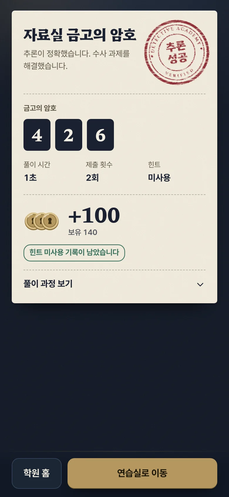

정답 결과: 축하 카드에서 채점된 시험지로
- 화면이 바뀌지 않습니다. 같은 책상에서 자물쇠 고리가 풀리고, 풀던 시험지에 인장이 찍힙니다.
- 풀이 시간과 제출 횟수는 손글씨로, 힌트 미사용은 교관의 빨간 펜 메모로 남습니다.
- 풀린 자물쇠가 풀이 때와 같은 자리에서 암호를 보여 줍니다.
- 아래 단추는 다음 행동(연습실로 이동) 하나가 와인색입니다.
장면이 이어지는 방식
화면 전체를 흐리게 바꾸는 대신, 방금 누른 물건이 다음 장면으로 넘어갑니다. 아래는 실제 동작 중간을 찍은 것입니다.
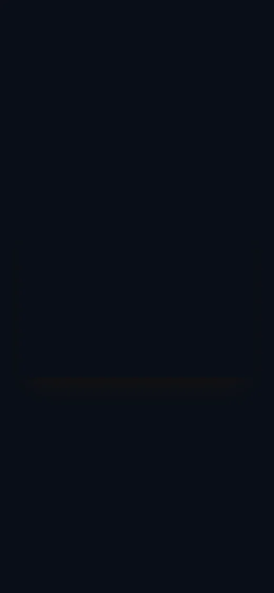
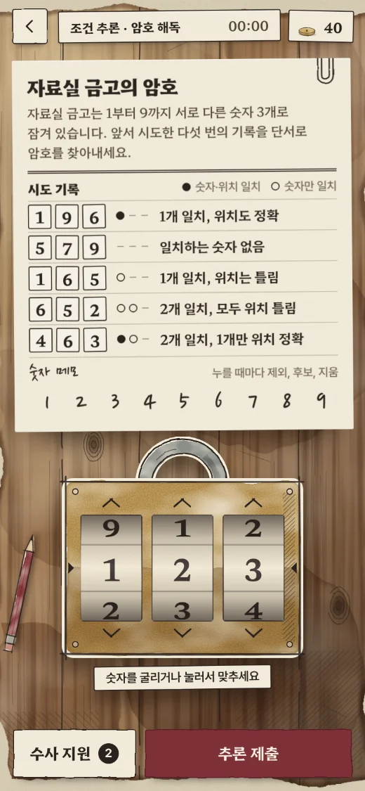

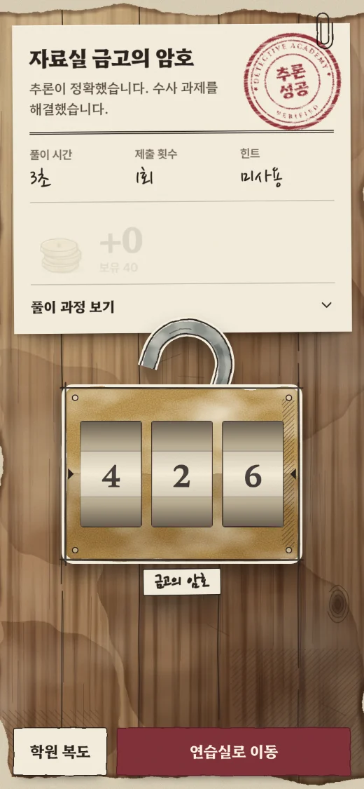
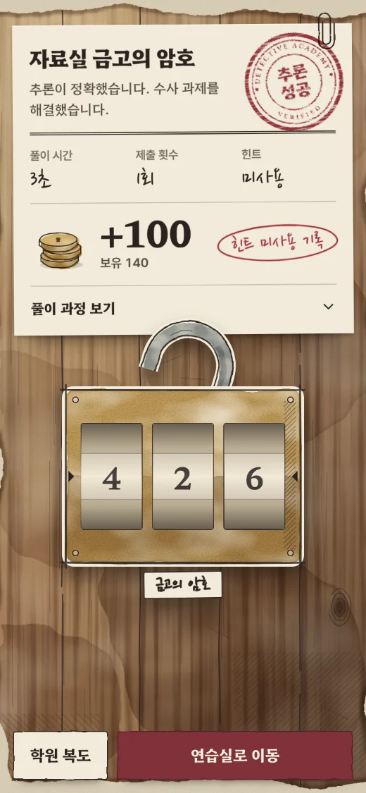
정답 연출은 화면을 누르면 건너뜁니다. 모션 줄이기 설정에서는 전환 없이 바로 결과가 나옵니다.
주소창이 보이는 사파리 화면에서도
휴대폰 브라우저는 주소창과 도구 막대 때문에 화면 높이가 664px 안팎으로 줄어듭니다. 사파리 엔진(WebKit)으로 이 크기를 열어 직접 조작해 봤습니다. 처음에는 자물쇠가 화면 밖으로 밀리고 3D 숫자 드럼이 깨져 보였으며, 경고 문구가 화살표 단추를 가렸습니다. 낮은 화면용 배치를 추가하고, 드럼을 엔진에 기대지 않는 방식으로 바꾸고, 문구 위치를 옮겼습니다. 아래는 고친 뒤의 사파리 엔진 화면입니다.
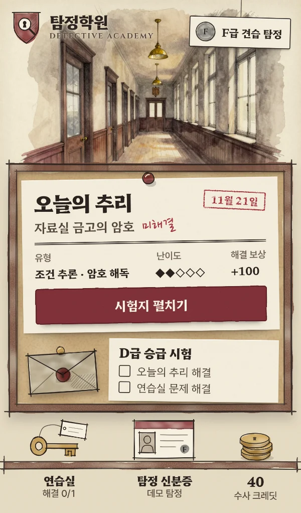
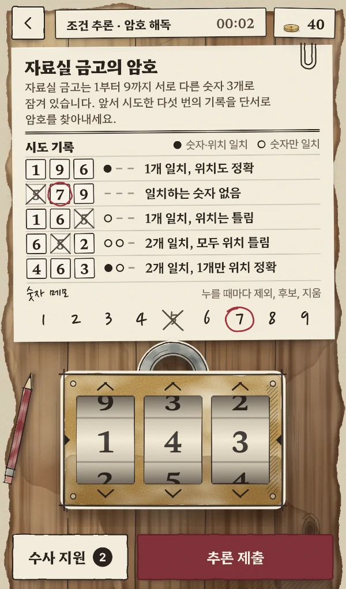
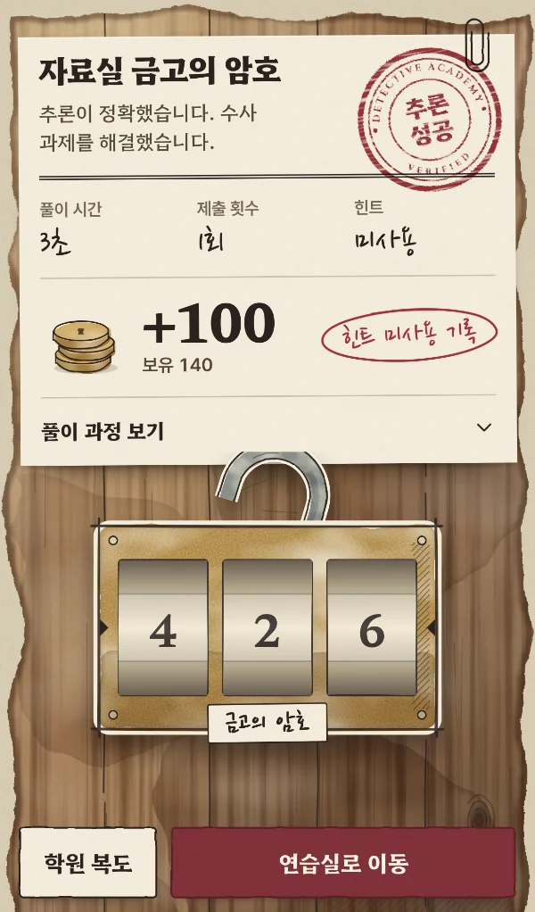
기존 디자인이 게임처럼 보이지 않았던 이유
코드를 고치기 전에 기존 일곱 화면을 실행해 기록했습니다. 아래 다섯 장과 위의 세 장이 그 기록입니다.
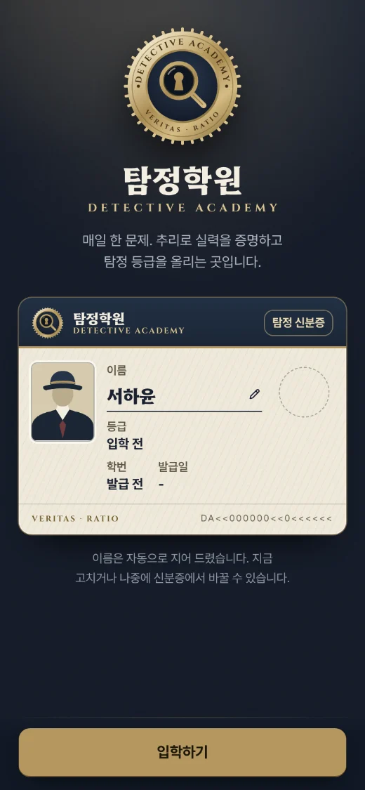
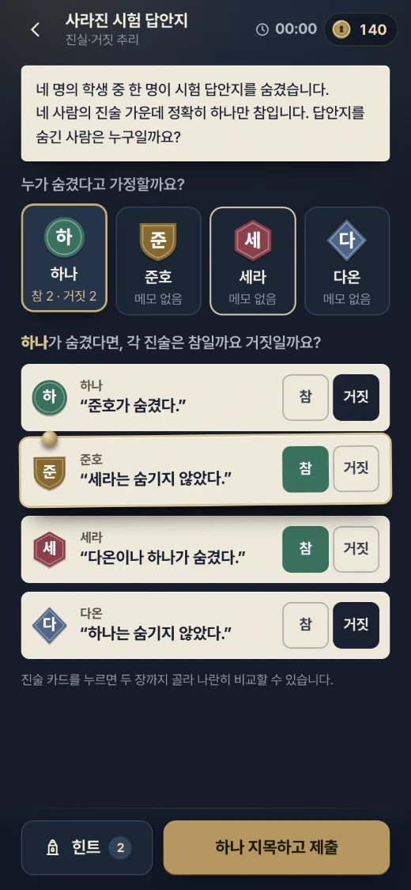
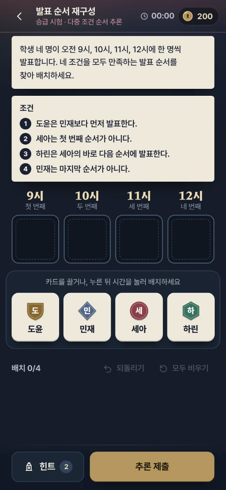
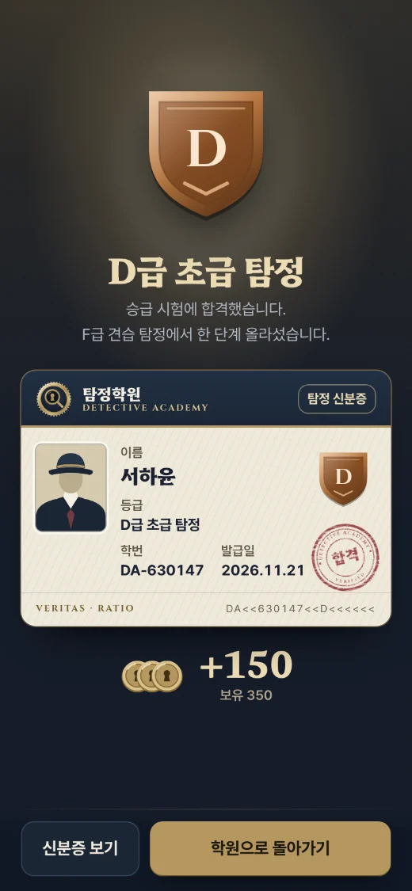
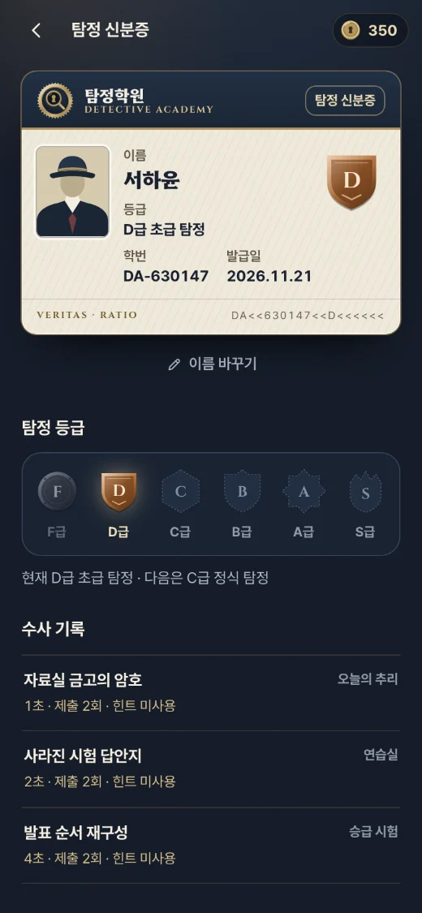
| 점검 항목 | 기존 화면에서 확인한 것 |
|---|---|
| 일반 앱처럼 보이는 요소 | 위쪽의 로고와 크레딧 칩, "신분증 >" 행, 카드 안의 "문제 풀기" 버튼, 아래 고정 버튼 두 개. 금융·생산성 앱의 대시보드 구성 그대로입니다. |
| 세계관과 무관한 UI | 알약 모양 칩, 둥근 사각 버튼, 꺾쇠 화살표, 원형 체크 표시. 탐정학원의 물건이 아니라 앱 부품입니다. |
| 카드와 패널의 반복 | 홈 세 덩어리, 암호 화면 세 덩어리, 결과 한 덩어리가 모두 남색 위의 둥근 아이보리 카드입니다. |
| 플레이 공간 | 암호 화면에서 손으로 만지는 다이얼이 화면 높이의 4분의 1 정도이고, 나머지는 읽는 패널과 빈 띠입니다. |
| 배경 그림과 물건 | 모든 화면이 같은 남색 그라디언트라 지금 어디인지 알 수 없습니다. 만질 수 있는 물건은 다이얼 하나였습니다. |
| 화면 전환 | 대부분 화면이 통째로 흐려지며 바뀝니다. 누른 물건이 이어지는 곳은 수사 파일 한 군데였습니다. |
| 그래픽 완성도 | 엠블럼, 봉투, 주화가 평평한 벡터 도형이고, 선과 재질을 묶는 하나의 화풍이 없었습니다. 검정 바탕에 금색 테두리를 반복해 금융 앱처럼 읽혔습니다. |
레퍼런스에서 가져온 표현 기법
보내 주신 호텔 더스크 화면 네 장에서 기법만 읽었습니다. 캐릭터, 일러스트, 화면 구성, 서체는 가져오지 않았습니다.
| 레퍼런스의 기법 | 탐정학원에서 쓴 곳 |
|---|---|
| 덜 채운 수채화 | 펜선이 색 바깥까지 이어지고 물감은 일부만 채워 종이로 풀립니다. 복도와 책상 배경, 그리고 모든 물건의 물감이 선과 조금 어긋나게 얹힙니다. |
| 오려 붙인 듯한 흰 테두리 | 자물쇠, 봉투, 신분증 같은 물건이 종이를 오려 올려놓은 것처럼 밝은 테두리를 갖습니다. |
| 기록물이 곧 화면 | 공고, 시험지, 꼬리표, 쪽지가 정보를 담습니다. 선택과 판정은 빨간 펜 동그라미, 체크, 연필 가위표로 표시합니다. |
| 손으로 그린 작은 단추 | 뒤로 가기와 수사 지원 단추는 테두리가 살짝 흔들리는 종이 딱지입니다. 글자는 흔들지 않아 읽기 쉽습니다. |
아트 디렉션: Illustrated Mystery Academy
스케치북 종이 위에 펜으로 긋고 물감을 덜 채운 그림입니다. 바탕이 어둡지 않고, 강조색은 와인레드 하나입니다.
화면은 네 층으로 쌓습니다. 장소를 알려 주는 배경 그림, 그 위의 물건, 문제를 조작하는 부분, 판정과 보상의 반응 순서입니다. 인쇄된 글은 명조 계열(함렛), 손으로 적은 글은 나눔손글씨 펜을 씁니다.
사용한 그래픽 에셋
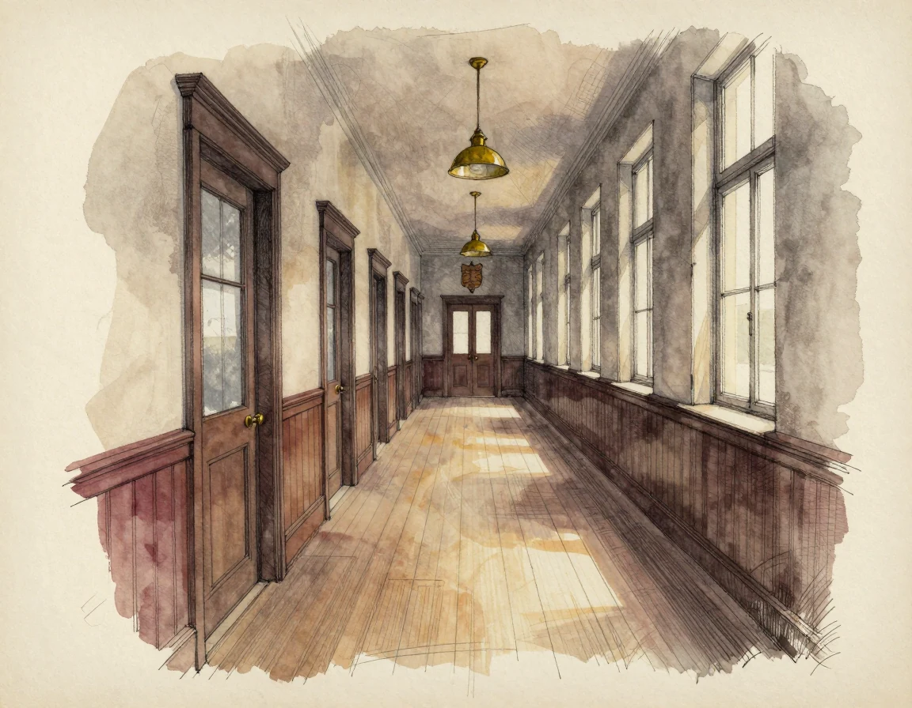
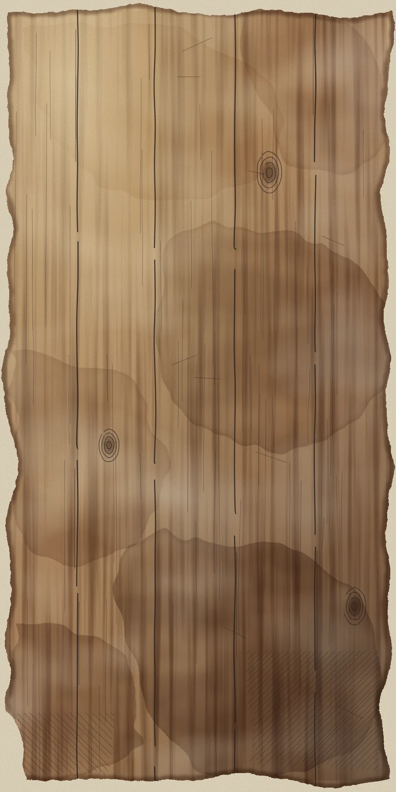
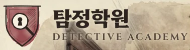
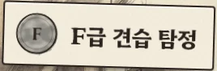
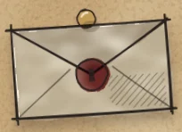
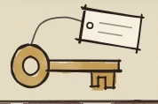
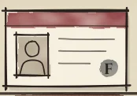
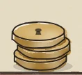

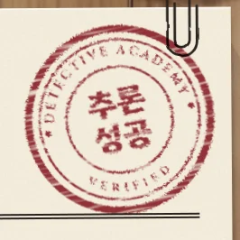
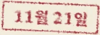
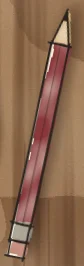
| 에셋 | 만든 방법 | 위치 |
|---|---|---|
| 학원 복도 배경 | AI 생성 이미지 1장. 화풍을 글로 묘사한 문장만 보냈고, 기존 게임 이름이나 이미지는 넣지 않았습니다. | src/assets/art/corridor.webp |
| 추리 책상 배경 | 직접 제작. 무료 생성 한도가 한 장에서 끝나 펜선 생성기와 물감 필터로 그린 뒤 WebP 로 구웠습니다. | scripts/render-art.ts |
| 엠블럼, 등급 표식, 압정, 봉투, 열쇠, 신분증, 주화, 연필, 클립 | 직접 제작한 SVG. 펜선과 물감을 따로 그려 겹칩니다. | src/art/objects.tsx |
| 암호 자물쇠 | 직접 제작. 고리와 몸통은 그림이고, 숫자 드럼은 원통 위의 위치를 계산해 그리는 조작부로 따로 구현했습니다. 조작부를 이미지 한 장으로 처리하지 않았습니다. | src/games/CodeBreaker |
| 펜선, 물감, 빨간 펜 표시 | 손으로 그은 듯한 선을 만드는 도구와 수채 필터. | src/art/sketch.ts, src/art/Art.tsx |
| 판정 인장 | 기존 인장을 유지했습니다. | src/components/Stamp.tsx |
확인 항목에 대한 자체 평가
| 확인 항목 | 판단 | 근거와 남은 약점 |
|---|---|---|
| 탐정학원처럼 느껴지는가 | 대체로 | 복도, 게시판, 시험 공고, 인장으로 "학원에서 시험을 본다"는 것은 화면만으로 전달됩니다. 다만 '탐정'보다 '오래된 학교' 쪽으로 읽힐 수 있습니다. 지금 탐정을 말해 주는 것은 엠블럼과 자물쇠 정도이고, 수사 기록과 학생 기록 카드가 들어가는 다음 단계에서 보강됩니다. |
| 실제 게임 화면처럼 보이는가 | 그렇다 | 배경 그림, 물건, 조작부가 층으로 나뉘었고 카드 묶음이 사라졌습니다. 약점은 책상 배경입니다. 직접 그린 것이라 복도 그림보다 붓 느낌이 덜합니다. |
| 조작 대상이 명확해졌는가 | 그렇다 | 홈에서 와인색은 다음 행동 하나입니다. 암호 화면에서는 자물쇠가 가장 크고 입체적인 물건이고, 드럼이 손가락을 따라 굴러갑니다. |
| 시각적 완성도가 개선되었는가 | 그렇다 | 모든 그림이 펜선과 수채라는 한 가지 화풍으로 묶였습니다. 세 화면 밖의 화면은 아직 기존 모습이라 오갈 때 화풍이 바뀝니다. |
| 텍스트와 조건의 가독성 | 유지 | 문제 조건은 밝은 종이 위 인쇄체 14.5px 입니다. 본문 대비 13.7:1, 보조 글자 7.8:1, 가장 옅은 글자 4.9:1, 빨간 펜 6.0:1 입니다. 375×812, 390×844, 430×932 와 낮은 화면 390×664 에서 시도 기록, 자물쇠, 제출 단추가 스크롤 없이 한 화면에 들어옵니다. |
아직 하지 않은 것
- 입학, 연습실 목록, 진술 추리, 승급 시험, 신분증 화면은 기존 모습 그대로입니다. 방향 확인 뒤 적용합니다.
- 시험실 배경과 학생 초상은 아직 없습니다. 무료 이미지 생성 한도가 소진되어, 한도가 돌아오면 생성하거나 직접 그립니다.
- 실제 휴대폰 기기에서는 확인하지 못했습니다. 크롬 엔진과 사파리 엔진(WebKit)의 모바일 에뮬레이션에서 그림, 드럼 조작, 장면 전환, 결과까지 확인한 것이 전부입니다.
- 새로 넣은 잠금 해제음은 귀로 들어 보지 않았습니다. 효과음은 기본 꺼짐입니다.